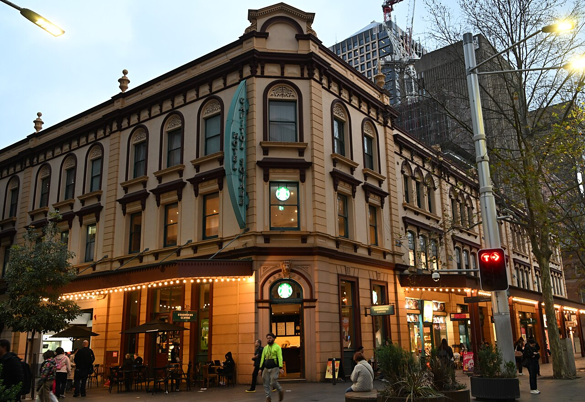
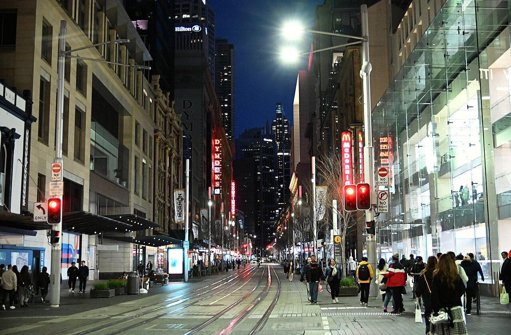
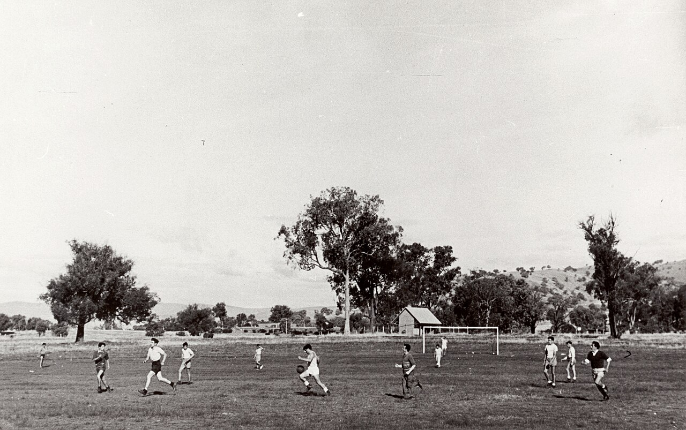
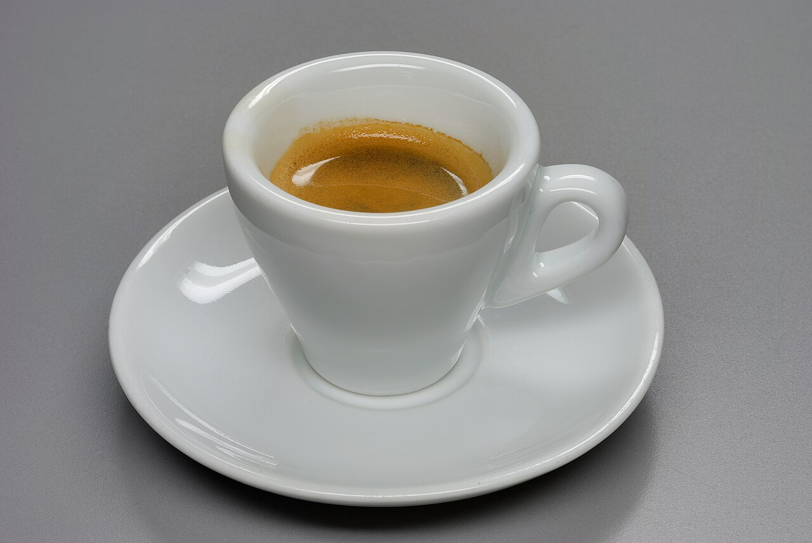
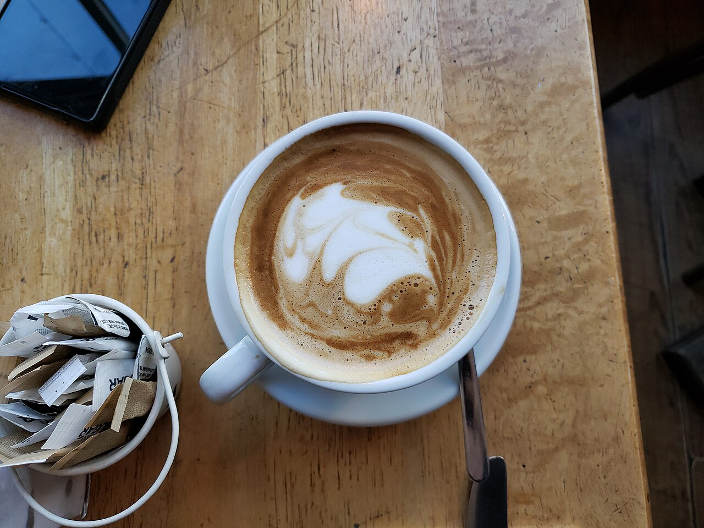
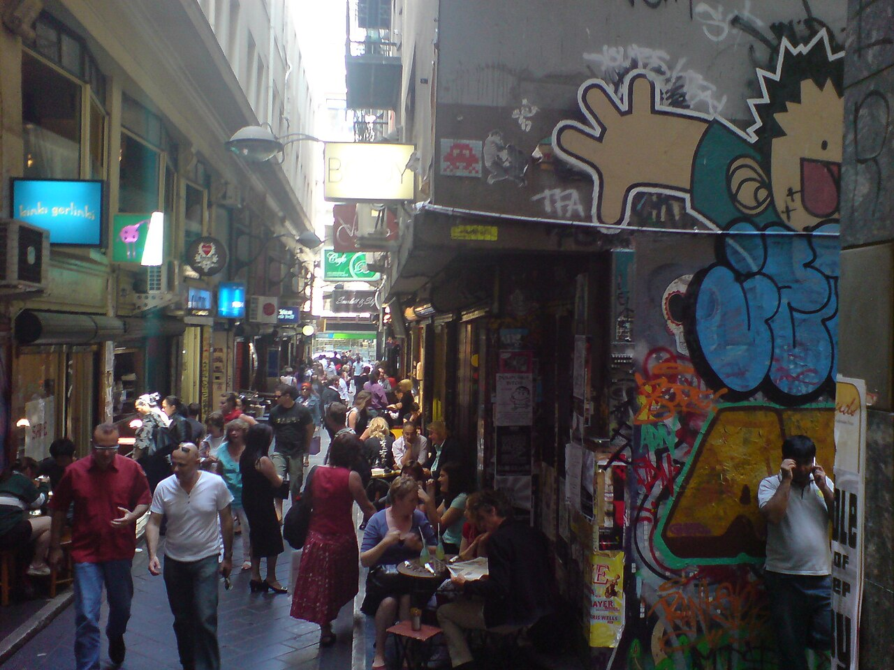
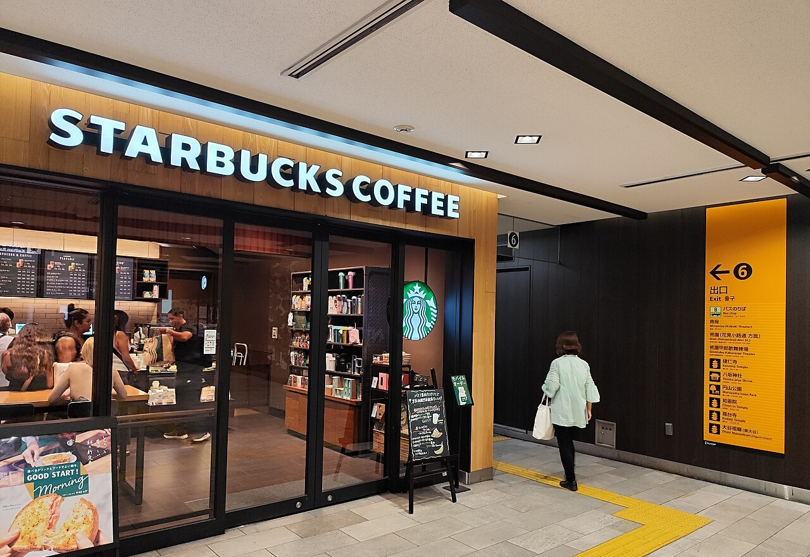
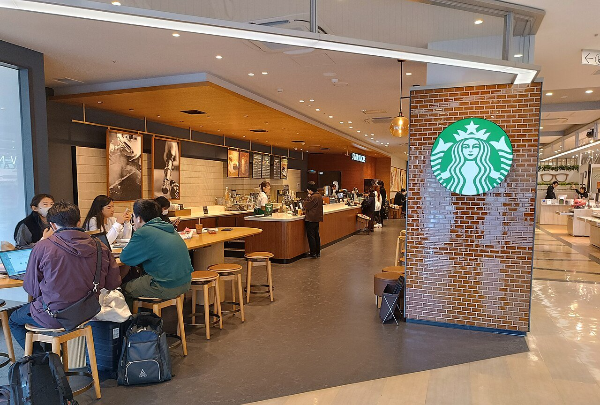

シドニー、2000年。街の中心にある公園ハイドパークのそばに、オーストラリアで最初のスターバックス（スタバ）が開きました。アメリカのシアトルで生まれたコーヒーチェーンは、その4年前に東京・銀座へも進出していました。
ところが8年後の2008年7月、スタバはオーストラリアにあった84店のうち、61店を閉じると発表します。英語が通じ、コーヒーもよく飲まれる国なのに、なぜうまくいかなかったのでしょうか。

2000年にシドニーへ来たスターバックスは、8年後、84店のうち61店を一度に閉じました。店の数の棒グラフ、コーヒーの歴史の年表、日本とのくらべから、その理由をたどります。スタバが来るより前の街角のカフェを、のぞいてみませんか。
シドニー、2000年。街の中心にある公園ハイドパークのそばに、オーストラリアで最初のスターバックス（スタバ）が開きました。アメリカのシアトルで生まれたコーヒーチェーンは、その4年前に東京・銀座へも進出していました。
ところが8年後の2008年7月、スタバはオーストラリアにあった84店のうち、61店を閉じると発表します。英語が通じ、コーヒーもよく飲まれる国なのに、なぜうまくいかなかったのでしょうか。
エスプレッソのカフェがすでに根づいていたから。
1号店のあと、スタバは大きな都市を中心に店を広げ、遠い北部のダーウィンや南の島タスマニアにも出店しました。2008年の半ばには84店（報道によっては85店）。店はどれも、各地の店主に任せるフランチャイズではなく、会社が自分で持つ「直営」でした。
2008年7月、会社は61店を閉じると発表し、閉店は1か月ほどで終わりました。残ったのは、人通りの多い場所の23店です。同じ月、スタバはアメリカでも約600店を閉じると発表しており、会社全体が立て直しの最中でした。では、オーストラリアでは何がうまくいかなかったのでしょうか。

第二次世界大戦のあと、オーストラリアはヨーロッパなどから多くの移民を受け入れました。イタリアから来た人たちは、蒸気や圧力で短い時間にコーヒーを濃くいれる「エスプレッソ」の機械を持ちこみます。1952年には、その機械が国内に現れはじめました。
1954年、メルボルンにエスプレッソ・バー「ペレグリーニズ」が開きます。メルボルンで最初の本格的なエスプレッソ・バーだといわれることが多い店です。報道では、イタリア系とギリシャ系の移民がエスプレッソを広めた、と説明されます。

1980年代には、エスプレッソに、きめの細かい泡の牛乳を薄くのせた「フラットホワイト」が広まったとされます。1985年にシドニーのカフェがメニューに書いたのが始まりだという説がありますが、ニュージーランド生まれだという説もあり、はっきりしません。
2000年にスタバが来るころには、個人のカフェで、バリスタ（エスプレッソをいれる職人）が一杯ずつコーヒーをいれるのが当たり前になっていました。つまりスタバは、何もない場所ではなく、すでに目の肥えた客のいる街にやってきたのです。


ニューサウスウェールズ大学のポール・パターソン教授らは、2010年の論文でスタバの撤退を分析しました。最初に挙げたのは、スタバが自分の「ちがい」を大きく見つもりすぎたことです。街にはすでに良いカフェがあり、スタバの雰囲気や飲み物はまねもしやすく、高い値段を払う理由が見えにくかったのです。
飲み物も好みとずれていました。スタバはアメリカと同じメニューを出しましたが、オーストラリアの人の好みはヨーロッパ風のコーヒーに近かったのです。アメリカの経済ニュース局CNBCも、スタバのコーヒーは地元の好みより甘く、値段も高かったと伝えています。

店の広げ方にも無理がありました。家賃の高い大きな店を借りたのに、お客は長く座り、1人あたりの支払いは少ない。しかも店はすべて直営です。急いで店を増やすうちに経験の浅い店員がふえ、スタバの強みだった心のこもった接客も薄れた、と論文の著者は指摘しています。
「スタバは、長続きする、信頼される強みを作れなかった」──ポール・パターソン教授（UNSW BusinessThink、2012年）
くらべてみたいのが日本です。スタバは1995年、衣料や雑貨の会社サザビーと共同で日本の会社をつくり、1996年8月、東京・銀座に1号店を開きました。北米の外では初めての店です。
日本の店は2003年11月に500店になりました。人口100万人あたりにすると約3.9店。オーストラリアが84店になった2008年も、人口100万人あたり約3.9店でした。上陸から7〜8年でここまで増やした速さは、2つの国でほとんど同じだったのです。
日本でも、すべてが順調だったわけではありません。株式を上場した直後の2002年度には、前からある店の売上が前の年を下回りつづけ、営業赤字になっています。それでも店は増えつづけ、2013年5月には1,000店に達しました。
組み方もちがいました。日本では地元の会社サザビーと組み、サザビーが「第3の空間」（家でも職場でもない、くつろげる場所）という考え方を、ほぼそのまま持ちこみました。オーストラリアでは、本社が自分で店を持ちました。
そしてオーストラリアのスタバは、高いわりに近所のカフェと変わらない、と見られました。同じ考え方の店でも、くらべられる相手がちがえば、受け取られ方も変わる。それが明暗の一因だったとみることもできそうです。


では、オーストラリアのスタバは、その後どうなったのでしょう。閉店のあと残った23店は、その後1店増えて24店に。2014年、その24店は、当時オーストラリアでセブン-イレブンを営んでいたウィザーズ家の会社に売られました。
新しい持ち主は、スタバをすでに知っている観光客や留学生が多い場所から店を増やした、と報じられています。2023年6月までの1年間では、上陸から23年で初めての黒字（約315万豪ドル。豪ドルはオーストラリアのお金の単位）を出しました。
ただ、2024年6月までの1年間は、店を増やしている最中に買い物の手控えも重なり、約580万豪ドルの赤字に戻りました。2024年10月には西海岸の州にも進出し、2024年の報道では、車に乗ったまま買えるドライブスルーの店を増やす計画とされています。
2008年の61店の閉店で、職を失った人の数ニューサウスウェールズ大学 BusinessThink、2012年
2008年に店を閉じるまでの8年間の赤字の合計（約1億4,300万豪ドル）同上
2024年12月の、オーストラリアのスタバの店の数。2014年に売られたときの3倍あまりWorld Coffee Portal、2024年12月12日
2008年に多くの店を閉じたあと、スタバはオーストラリアの店で、ある飲み物を出しはじめます。フラットホワイトです。スタバの発表では、2009年にオーストラリア、2010年にイギリスの店で売り出しました。
そして2015年1月の発表で、スタバはこの一杯を「1980年代にオーストラリアで生まれた」と紹介し、アメリカとカナダの店に並べました。短くいれた濃いエスプレッソ2杯に、薄くきめ細かい牛乳を合わせる、という説明です。
同じ発表文は、フラットホワイトがスタバより先に、イギリスのカフェで定番になっていたことにもふれています。生まれた場所にはニュージーランド説もありますが、街の小さなカフェで育った一杯が、大きなチェーンのメニューにも加わったのです。
次にカフェのメニューで「フラットホワイト」の文字を見かけたら、それがメルボルンやシドニーの路地から、海をこえてやってきた一杯だと思い出してみてください。